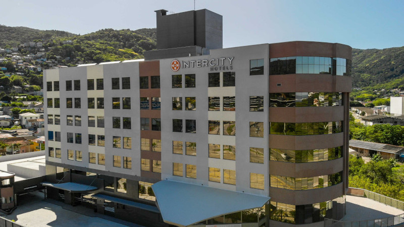

<section id="light-card">
    <div class="p-2 container col-sm-12 col-lg-8 text-justify">
        <h2 class="p-4 text-center">Informações Locais</h2>
        <h4>Local do evento</h4>
        <p class="lead">
            A XXV Escola Regional de Alto Desempenho da Região Sul (ERAD/RS 2024) será realizada nas dependências do <b>Itaipu Parquetec</b>, na cidade de Foz do Iguaçu.</p>
        
        <div class="row">
            <div class="col-sm">
                <figure>
                    
                </figure>
            </div>
            <div class="col-sm">
                <iframe src="https://www.google.com/maps/embed?pb=!1m18!1m12!1m3!1d6607.997442768901!2d-54.59150469561133!3d-25.4370522910481!2m3!1f0!2f0!3f0!3m2!1i1024!2i768!4f13.1!3m3!1m2!1s0x94f69b15d0d21477%3A0x867f6cecb7c58dbd!2sItaipu%20Parquetec!5e0!3m2!1spt-BR!2sbr!4v1730893211504!5m2!1spt-BR!2sbr" width="600" height="450" style="border:0;" allowfullscreen="" loading="lazy" referrerpolicy="no-referrer-when-downgrade"></iframe>
            </div>
        </div>

        <p class="lead">
            Localizado estrategicamente em Foz do Iguaçu, na Tríplice Fronteira entre Brasil, Paraguai e Argentina, o Itaipu Parquetec é um ecossistema de inovação que integra entidades como instituições de ensino, empresas e órgãos governamentais.
        </p>
        <p class="lead">
            Instalado nas dependências da margem brasileira da Itaipu Binacional, em uma área de 75,54 hectares, o Itaipu Parquetec conta com salas de aula, laboratórios de ensino e pesquisa, centros de excelência, instituições científicas e de inovação tecnológica.
        </p>

<hr />
        
        <h4> Como chegar em Foz do Iguaçu</h4>
        <p class="lead">
        Para chegar a Foz do Iguaçu, no Paraná, existem diversas opções de transporte. 
        A maneira mais comum é de avião, com o <a href="https://aeroportos.grupoccr.com.br/foz-do-iguacu-pr/" target="_blank">Aeroporto Internacional de Foz do Iguaçu (IGU)</a> recebendo voos nacionais e internacionais, conectando a cidade às principais cidades do país.
        Outra alternativa é viajar de ônibus, com várias empresas oferecendo trajetos diretos para Foz a partir de diferentes estados brasileiros.
        Para quem prefere viajar de carro, a cidade é acessível por rodovias importantes, como a BR-277, que conecta Foz do Iguaçu a Curitiba e outras regiões do Brasil. 
        </p>    

<hr />
        
       <h4>Hospedagem</h4>
<h5><strong>JL Hotel by Bourbon</strong></54>
<p class="lead"><a href="https://www.bourbon.com.br/hotel/jl-hotel">https://www.bourbon.com.br/hotel/jl-hotel</a></p>
<p class="lead">Av. Costa e Silva, 154 - Centro</p>
<table style="border-collapse: collapse; width: 100%;" border="1">
<tbody>
<tr>
<td style="width: 100%;">
<p style="font-size: 11pt; font-family: Calibri,sans-serif; margin: 0;"><span style="color: black;" data-olk-copy-source="MessageBody">Apto SINGLE: &nbsp;R$320,00 + 5% ISS</span></p>
<p style="font-size: 11pt; font-family: Calibri,sans-serif; margin: 0;"><span style="color: black;">Apto DUPLO: &nbsp;R$360,00 + 5% ISS<br />Apto TRIPLO:&nbsp; R$480,00 + 5% ISS<strong> (05 apartamentos triplos dispon&iacute;veis para o per&iacute;odo)</strong></span></p>
<p style="font-size: 11pt; font-family: Calibri,sans-serif; margin: 0;">&nbsp;</p>
<p style="font-size: 11pt; font-family: Calibri,sans-serif; margin: 0;"><span style="color: black;">Caf&eacute; da manh&atilde; inlcuso servido no restaurante do hotel.&nbsp;</span></p>
<p style="font-size: 11pt; font-family: Calibri,sans-serif; margin: 0;"><span style="color: black;">Estacionamento tem o custo de R$30,00 por dia, por ve&iacute;culo pequenos</span></p>
</td>
</tr>
</tbody>
</table>
<p class="lead">As reservas com tarifa especial devem ser feitas pelo e-mail <a href="mailto:grupos1@jlhotelbybourbon.com.br">grupos1@jlhotelbybourbon.com.br</a> ou pelo WhatsApp (45) 3422-1282 (Katherine Beal).</p>

<h5><strong>Nadai Confort Hotel &amp; Spa</strong></h5>
<p class="lead"><a href="https://nadaiconforthotel.com.br/">https://nadaiconforthotel.com.br/</a></p>
<p class="lead">Av. Rep&uacute;blica Argentina, 1332 - Centro</p>
<table style="border-collapse: collapse; width: 100%; height: 90px;" border="1">
<tbody>
<tr style="height: 18px;">
<td style="width: 33.3333%; height: 18px;">Acomoda&ccedil;&otilde;es</td>
<td style="width: 33.3333%; height: 18px;">&nbsp;Luxo - Caf&eacute; da manh&atilde;</td>
<td style="width: 33.3333%; height: 18px;">&nbsp;Luxo - Caf&eacute; da manh&atilde; e jantar</td>
</tr>
<tr style="height: 18px;">
<td style="width: 33.3333%; height: 18px;">Individual</td>
<td style="width: 33.3333%; height: 18px;">&nbsp;R$ 342,00</td>
<td style="width: 33.3333%; height: 18px;">&nbsp;R$ 426,00</td>
</tr>
<tr style="height: 18px;">
<td style="width: 33.3333%; height: 18px;">Duplo</td>
<td style="width: 33.3333%; height: 18px;">&nbsp;R$ 360,00</td>
<td style="width: 33.3333%; height: 18px;">&nbsp;R$ 526,00</td>
</tr>
<tr style="height: 18px;">
<td style="width: 33.3333%; height: 18px;">Triplo</td>
<td style="width: 33.3333%; height: 18px;">&nbsp;R$ 486,00</td>
<td style="width: 33.3333%; height: 18px;">&nbsp;R$ 734,00</td>
</tr>
<tr style="height: 18px;">
<td style="width: 33.3333%; height: 18px;">Qu&aacute;druplo</td>
<td style="width: 33.3333%; height: 18px;">&nbsp;R$ 559,00</td>
<td style="width: 33.3333%; height: 18px;">&nbsp;R$ 889,00</td>
</tr>
</tbody>
</table>
<p class="lead">O hotel cobra taxas n&atilde;o inclusas, sendo 5% ISS e R$ 2,90/dia de taxa turismo (por pessoa).</p>

    
<h5>Hotel Ibis Foz do Igua&ccedil;u</h5>
<p class="lead"><a href="https://all.accor.com/hotel/7380/index.pt-br.shtml">https://all.accor.com/hotel/7380/index.pt-br.shtml</a></p>
<p class="lead">Rua Almirante Barroso 866, Centro</p>
<p class="lead">O hotel possui tarifas flutuantes (variam conforme a disponibilidade).</p>
<p class="lead">Para a ERAD, o hotel est&aacute; oferenceo tarifa especial 20% de desconto.</p>
<p class="lead">A reserva deve ser feita por meio do link: &lt;LINK&gt;</p>
    
<h5>Viale Hot&eacute;is</h5>
<p class="lead"><a href="https://www.vialehoteis.com.br/">https://www.vialehoteis.com.br/</a></p>
<p class="lead">A rede oferece tr&ecirc;s op&ccedil;&otilde;es de hospedagem. Consultar site.</p>
<p class="lead">O hotel possui tarifas flutuantes (variam conforme a disponibilidade).</p>
<p class="lead">Para a ERAD, o hotel est&aacute; oferenceo tarifa especial 10% de desconto.</p>
<p class="lead">A reserva deve ser feita atrav&eacute;s do e-mail <a href="mailto:comercial4@vialehoteis.com.br">comercial4@vialehoteis.com.br</a></p>
<p>&nbsp;</p>

 <!--  <div class="row gallery">
            <div class="col-sm gallery">
                
            </div>
            <div class="col-sm gallery">
                
            </div>
        </div>
        
        <p class="lead">
            Além desta, há outras alternativas de hotéis e hostels, assim como aluguéis por aplicativo. Uma concentração maior de opções pode ser encontrada no centro da cidade e outros bairros próximos, cujo acesso é fácil, seja por transporte público ou privado. Clique <a href="https://www.google.com.br/maps/search/hostels+foz+do+igua%C3%A7u/@-25.5290396,-54.5658739,13.58z/data=!4m5!2m4!5m3!5m2!1s2025-04-23!2i2?entry=ttu" target="_blank">aqui</a> para visualizar algumas opções de hospedagem na região. 
        </p>

    <hr />
        
        <h4>Alimentação</h4>

        <p class="lead">
            Nas instalações do UniSENAI Campus Florianópolis, os participantes encontrarão uma cantina com opções de lanches, enquanto restaurantes podem ser encontrados nas redondezas. Abaixo, apresentamos algumas das opções:
            <ul>
                <li><b>Delícias do Campo</b> - @deliciasdocampofloripa (550 m)<br/>
                    Variedade de saladas e pratos quentes com destaque aos frutos do mar, sobremesas e bebidas, ambiente familiar.
                </li>
                <li><b>Imigrantes Buffet e Eventos</b> - @imigrantesbuffet (1,3 km)<br/>
                    Cardápio variado e de qualidade, servido em sistema de Buffet a quilo. 
                </li>
                <li><b>Passeio Primavera</b> - <a href="https://www.passeioprimavera.com.br/experiencias/gastronomia">https://www.passeioprimavera.com.br/experiencias/gastronomia</a> (500 m)<br/>
                    Diversas opções de restaurantes.
                </li>
                <li><b>Floripa Shopping</b> - @floripashopping (1 km)<br/>
                    Praça de alimentação com variadas opções.
                </li>
            </ul>
        </p>-->

<hr />
        
        <h4>Informações Turísticas</h4>
        <p class="lead">
            Poucos lugares no mundo concentram tantas experiências surpreendentes e encantadoras como a capital paranaense do turismo. 
        </p>
        <p class="lead">
            Para informações sobre o turismo local, acesse:
            <li><a href="https://www.iguassu.com.br/">Visit Iguassu</a></li>
            <li><a href="https://www.destino.foz.br/atrativos-e-passeios-em-foz-do-iguacu/">Secretaria de Turismo</a></li>        
        </p>
        
</section>
